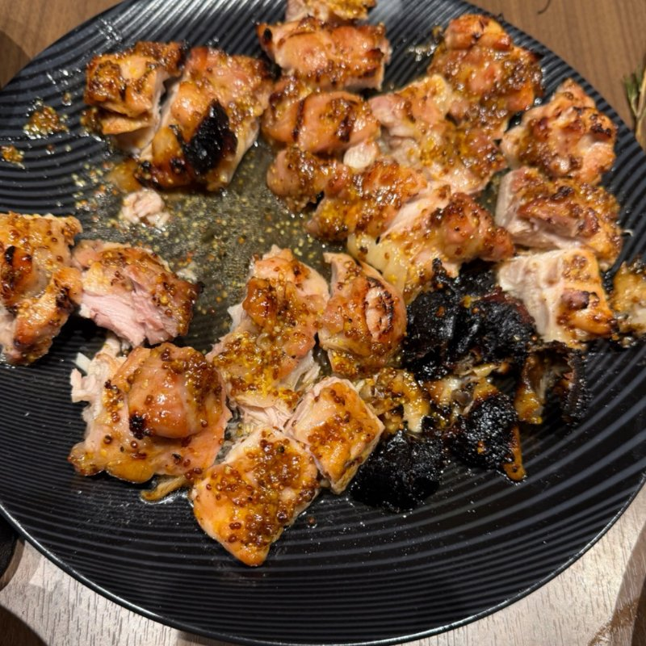
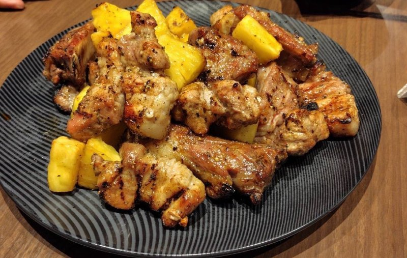
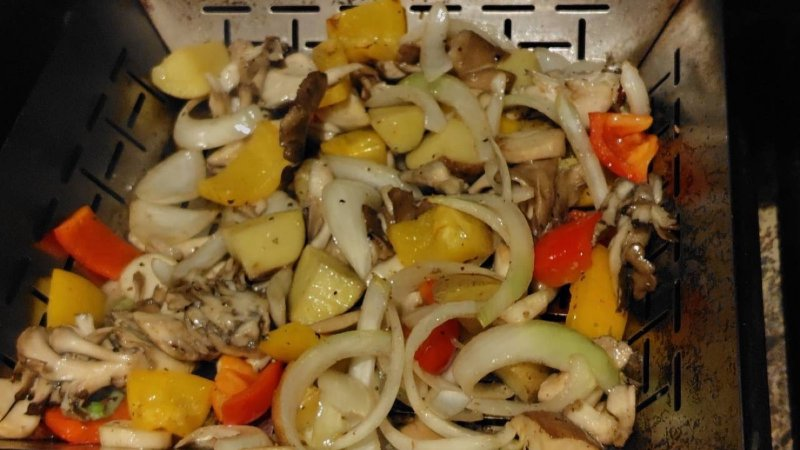
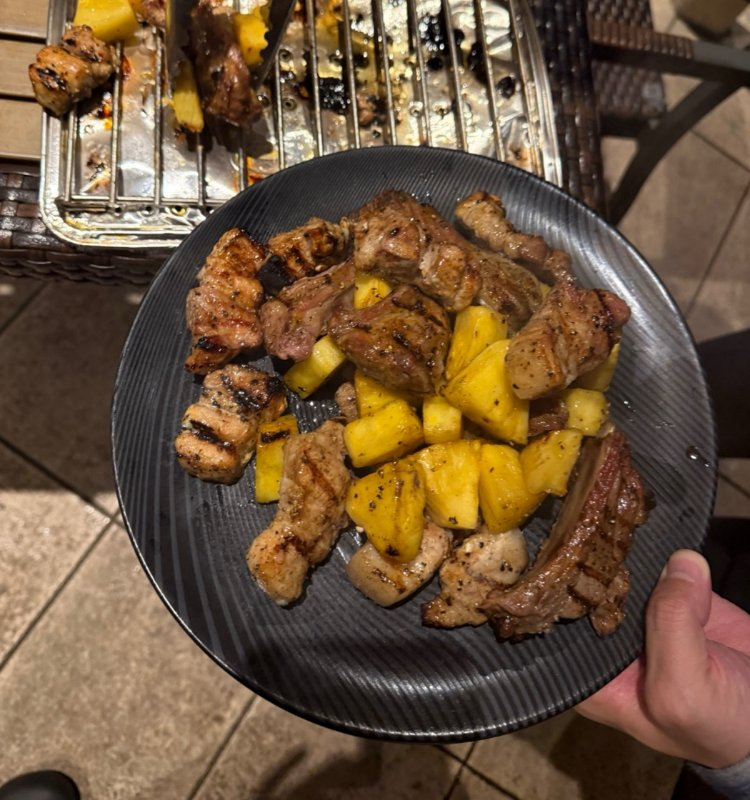
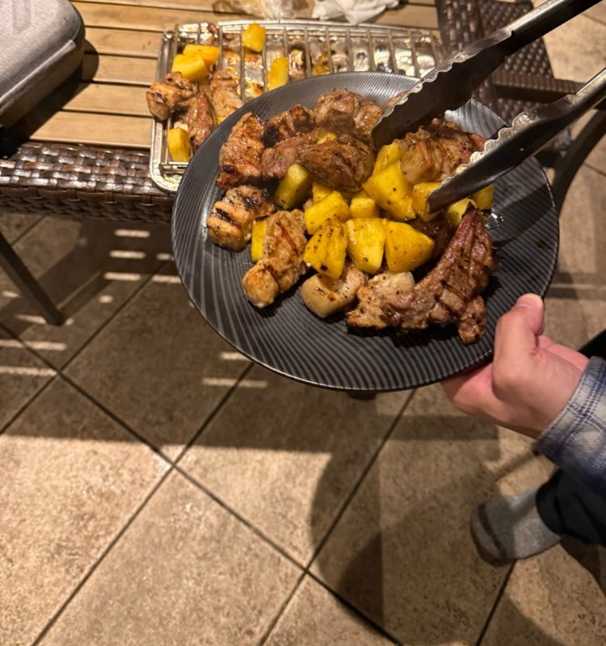

メンバー用（作り方つき）のレポートです。リンクを知っている人だけが開けます。外には共有しないでください。
山中湖で、ガスグリルを囲んだ日
11月6日、山中湖でバーベキューをしました。男性5人で、ガスグリルを囲んでスピーディーに。ガスグリルの使い方、焦げ目、野菜の量、豚バラ。焼くたびに発見があった1日でした。
今日のメニュー





作り方は、一緒に焼いたメンバーだけのお楽しみにしています。気になった料理は、バーベキューに来て焼き手に聞いてみてください。 バーベキューの予定を見る
1ガスグリルが、うまくはまった
今回いちばんの収穫は、ガスグリルをうまく使いこなせたこと。ソーセージも鶏肉も、狙いどおりに焼けました。
これまでは焦げついたり、肉がくっついたりすることがありました。今回は3口ある火の使い分けがはまって、うまく焼けた感覚がありました。
炭とは違う、ガスならではの焼き方が一つ見えた回です。
2焦げ目が、おいしさの決め手
スペアリブやハニーマスタードの鶏肉は、焦げ目が決め手。表面がパリパリになって、香ばしさが出ます。
表面がパリッとして、ハニーマスタードの甘さと酸味で手が止まりませんでした。
焦げ目をつけたあとの焼き方まで含めて、この流れが非常に良かった、というのが振り返りです。
3野菜は、あるに越したことはない
大きなベジタブルバスケットを2周。大人5人で大満足でした。
かなり野菜が多いなと思っていましたが、2周してうまく消費できました。これは発見でした。
泊まりなら翌日にも食べられる。たくさんあっても困りません。
4味つけの荷物は軽く、でも甘めのソースは一つ
車がないと、味つけの持ち運びは大変。それでも、甘めのソースは一つあってもいいと感じました。
グランピングなどに行くとき、ラブをリュックで運ぶのは大変でした。前に買ったバーベキューソースまで全部持っていくのはつらいので、今回はラブだけを持参。
ハニーマスタードがあったので甘めの味もありましたが、スペアリブはもう少し甘くてもよかった。味に緩急があると、もっと楽しめそうです。
5スピーディーに楽しむ会も、それはそれであり
男性5人、ゆったりよりもテンポよく楽しむ会。ガスグリルで提供は早く、少し慌ただしいくらいでした。
焼くのに時間がかかりすぎると、待つ側は少し退屈になってしまうかもしれない。一方で、ゆったり焼く感覚は持ちにくかった、という振り返りです。
メンバーや会の雰囲気に合わせて、焼くテンポを変えるのが良さそうです。

6ロピアは、やはり最強
買い出しは、途中で車で寄ってもらったロピアで。やはり安くて、すごくいい。
食材の値段はロピアが強い、と改めて感じました。
一方で、お肉をどう買うかは、これからの考えどころです。
7スペアリブに豚バラを混ぜたら、みんな喜んだ
スペアリブを揃えて買うのは大変。そこに豚バラを混ぜて焼いたら、これが喜ばれました。
豚バラは、まとめて焼くより切って焼いたほうが満足度が上がる。焼けるのも早く、テンポよく出せます。
次は豚肩ロースや牛バラ、牛肩ロースでも試してみたい、という話も出ています。